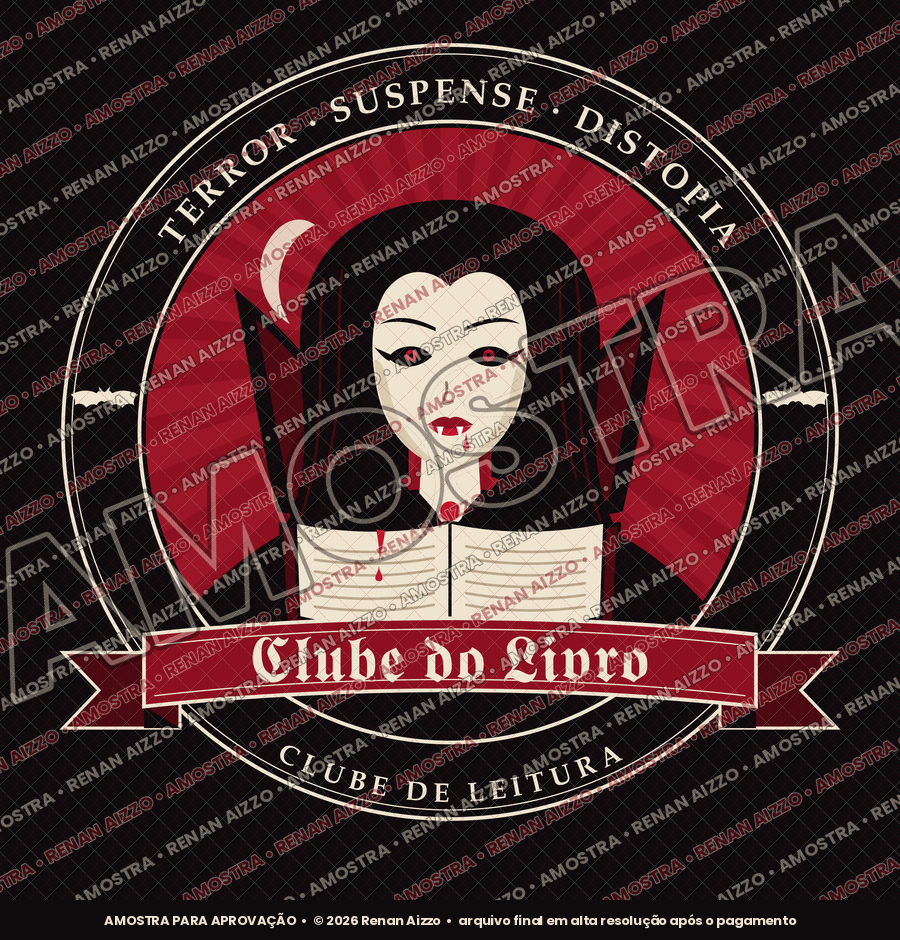
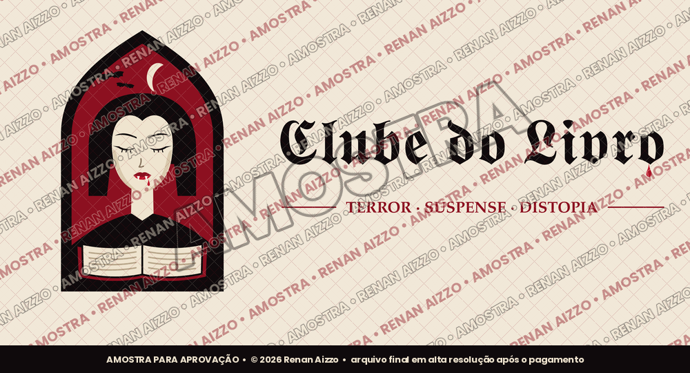

I. Emblema clássico
Um selo com cara de sociedade secreta: a vampira de olhos rubros segura um livro que sangra, cercada pela lua e por morcegos. Ideal para camisetas, ecobags, marcadores de página e o destaque do perfil.
Proposta de logotipo
Preparei dois caminhos para a nova marca do clube, os dois com a vampira como protagonista e o nome em letra gótica. Escolha o seu favorito: depois disso, ajustamos juntos cada detalhe até ficar com a cara de vocês.

Um selo com cara de sociedade secreta: a vampira de olhos rubros segura um livro que sangra, cercada pela lua e por morcegos. Ideal para camisetas, ecobags, marcadores de página e o destaque do perfil.

Mais limpo e direto: a vampira serena dentro de uma janela de catedral, com o nome ao lado e uma gota de sangue escorrendo. Fica nítido até em tamanho pequeno, como a foto de perfil do Instagram e do grupo de leitura.
As imagens acima são amostras de baixa resolução, com marca d'água, apenas para apreciação. O nome "Clube do Livro" é provisório e será trocado pelo nome do clube. Arte original de Renan Aizzo; os direitos de uso são transferidos após o pagamento.